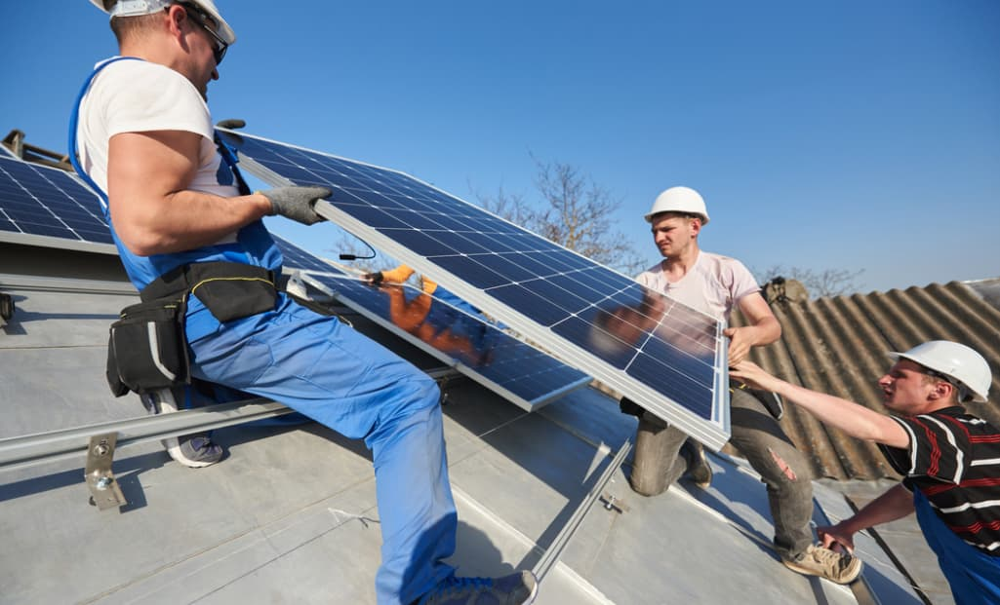
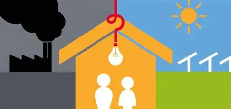
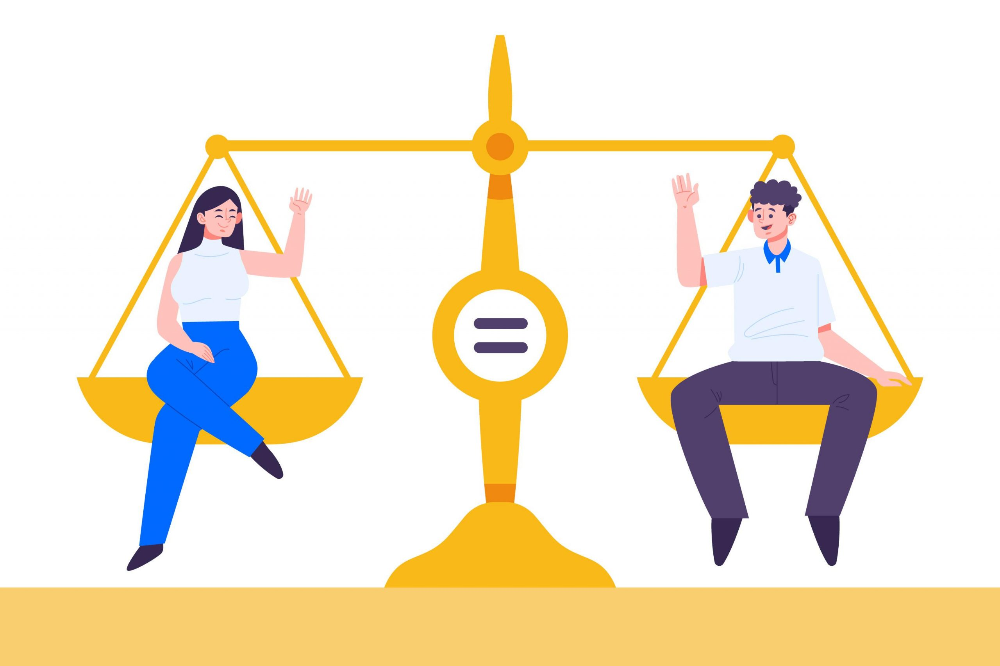

Aquí trobaràs recomanacions pràctiques per a ciutadans i empreses de Granollers.
Suport a energies renovables
L’Ajuntament de Granollers impulsa actuacions per fomentar l’ús d’energies renovables,
promovent la instal·lació de plaques solars en equipaments públics i donant suport a iniciatives ciutadanes.

Programes contra la pobresa energètica
Es desenvolupen accions per reduir la pobresa energètica, garantint l’accés a serveis bàsics
i oferint ajuts a famílies en situació de vulnerabilitat.

Iniciatives per la igualtat de gènere
L’Ajuntament promou programes educatius i accions per avançar cap a la igualtat efectiva
entre dones i homes, fomentant la igualtat d’oportunitats.
